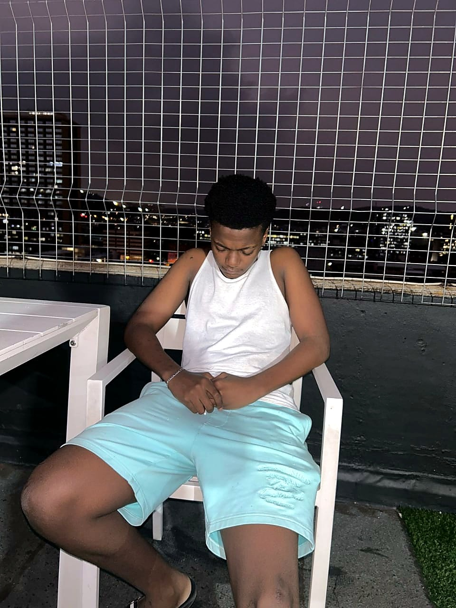
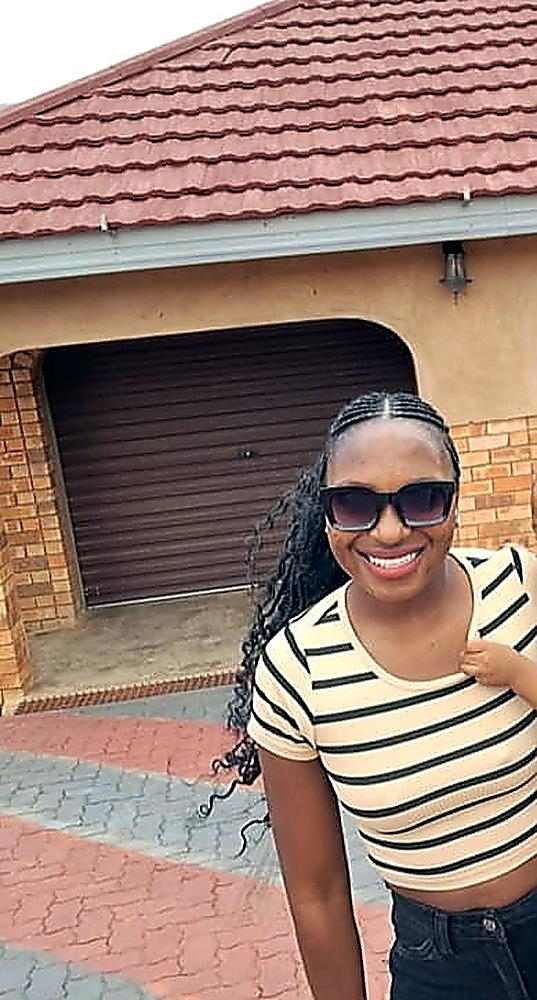

Our Mission
At Hope Connect Foundation, our mission is to build stronger, more equitable communities by uniting individuals and organizations around common goals. We champion initiatives in education, environmental sustainability, and social justice—empowering underserved populations and amplifying local voices.
Every project we undertake is rooted in collaboration, compassion, and a commitment to meaningful change.
Our Vision
We envision inclusive, resilient communities where people have the opportunity, support, and confidence to improve their lives and contribute to positive social change.
Our Core Values
- Inclusivity: We value every voice and work to ensure that everyone can participate.
- Empathy: We listen to communities and respond with compassion and respect.
- Collaboration: We build partnerships because lasting change is stronger when we work together.
- Integrity: We act responsibly, honestly, and transparently.
- Impact: We focus on practical initiatives that create meaningful and sustainable change.
Our Story
Hope Connect Foundation began as a small volunteer collective in 2020, responding to urgent community needs during a time of global uncertainty. What started with food drives and local cleanups has since evolved into a full-fledged organization serving communities nationwide.
Today, we continue to grow through partnerships, innovation, and the passion of volunteers who believe that real change starts with unity. From grassroots organizing to policy advocacy, we’re proud to be a force for good wherever we go.
Meet the Team

Calvin Ramabusha
CEO & Founder

Orineya Ramabusha
Chief Technology Officer

Ruth Ramabusha
Director of Outreach

Magreat Ramabusha
Program Manager